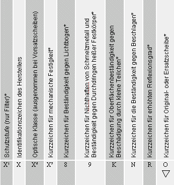
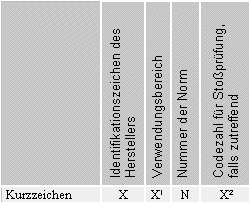

| 3.2.4 |
Kennzeichnung |
| 3.2.4.1 |
CE-Kennzeichnung |
| |
Augenschutz muss mit der CE-Kennzeichnung versehen sein. Sie besteht entsprechend der Achten Verordnung zum Geräte- und Produktsicherheitsgesetz aus dem Kurzzeichen "CE" (communaute européene) und bei Produkten der Kategorie III aus der 4-stelligen Kennnummer der gemeldeten Stelle, die die Produktionsüberwachung durchführt. |
| Die unterschiedliche CE-Kennzeichnung ist von der jeweiligen Kategoriezugehörigkeit der persönlichen Schutzausrüstungen abhängig. |
| |
Kategorie I: |
| In diese Kategorie gehören solche persönlichen Schutzausrüstungen, bei denen man davon ausgeht, dass der Benutzer selbst die Wirksamkeit gegenüber geringfügigen Risiken beurteilen kann und deren Wirkung, wenn sie allmählich eintritt, vom Benutzer rechtzeitig und ohne Gefahr wahrgenommen werden kann. |
| Die persönlichen Schutzausrüstungen dieser Kategorie sind für die Sicherheit und den Gesundheitsschutz am Arbeitsplatz weitgehend unbedeutend. |
| Kategorie II: |
| Zu dieser Kategorie gehören alle persönlichen Schutzausrüstungen, die weder der Kategorie I noch der Kategorie III zuzuordnen sind. |
| Kategorie III: |
| Zur Kategorie III gehören persönliche Schutzausrüstungen, die gegen tödliche Gefah-ren oder ernste und irreversible Gesundheitsschäden schützen sollen, und bei denen man davon ausgehen muss, dass der Benutzer die unmittelbare Wirkung der Gefahr nicht rechtzeitig erkennen kann. |
| Die CE-Kennzeichnung der persönlichen Schutzausrüstungen sieht, entsprechend der Kategorieneinteilung, wie folgt aus: |
| Kategorie I CE |
| Kategorie II CE |
Kategorie III CE/Kennnummer der gemeldeten Stelle, die die
Produktionsüberwachung durchführt. |
| |
Kategorie |
| Alle Schutzausrüstungen für das Auge und Filter |
II |
| außer: |
|
| Augenschutz und Filter, die für den Einsatz in heißer Umgebung konzipiert und hergestellt werden, die vergleichbare Auswirkungen hat wie eine Umgebung mit einer Lufttemperatur von 100 °C oder mehr, mit oder ohne Infrarotstrahlung, Flammen oder großen Schmelzmaterialspritzern |
III |
| Zum Schutz gegen ionisierende Strahlungen konzipierter und hergestellter Augenschutz und Filter |
III |
| Zum Schutz gegen Risiken der Elektrizität konzipierter und hergestellter Augenschutz und Filter |
III |
| Schwimm- und/oder Tauchbrillen und -masken |
I |
| Augenschutz und Filter, die ausschließlich zum Schutz gegen Sonnenstrahlen konzipiert und hergestellt werden, Sonnenbrillen ohne Korrektureigenschaften, die für den privaten und gewerblichen Gebrauch bestimmt sind |
I |
| Ski-Korbbrillen aller Art außer Korrekturbrillen |
I |
Korrekturbrillen einschließlich Sonnenbrillen mit Korrekturglas
Bemerkung: Haben die Brillen andere Schutzeigenschaften als den Schutz gegen die Sonnenstrahlen, z.B. gegen Stöße, Schleifteilchen, werden sie einzig und allein auf Grund dieser Schutzeigenschaften als persönliche Schutzausrüstungen in die Kategorie eingestuft, die dem entsprechenden Risiko entspricht |
0*) |
| Für die Verwendung mit zwei- oder dreirädrigen Krafträdern konzipierte und hergestellte, in Helme integrierte Visiere |
0**) |
|
*) Augenschutz für medizinische Zwecke
**) Augenschutz für den Straßenverkehr
Tabelle 1: PSA Kategorien Augenschutz
|
3.2.4.2 |
Allgemeine Kennzeichnung nach Normen |
| |
Normengerechte Augenschutzgeräte werden entsprechend den nachfolgenden Tabellen gekennzeichnet. Sichtscheiben und Tragkörper sind getrennt gekennzeichnet. Bestehen beide aus einer Einheit, befindet sich die Kennzeichnung auf dem Tragkörper. |
| |
Die in den nachfolgenden Abschnitten aufgeführten technische Daten sind in der vorgegebenen Reihenfolge auf Sichtscheiben oder Tragkörpern angebracht. |
3.2.4.2.1 |
Kennzeichnung der Sichtscheiben nach DIN EN 166 |
| |
Die Kennzeichnung der Sichtscheiben muss wesentliche technische Informationen in folgender Form enthalten: |

*: falls zutreffend
X1: Schutzstufennummer gemäß Tabelle 3
X2: Optische Klasse gemäß Tabelle 4
X3: Festigkeit gemäß Tabelle 5
Tabelle 2: Kennzeichnung von Sichtscheiben
|
Schutzstufen |
Die Strahlendurchlässigkeit eines Filters wird durch eine Schutzstufe dargestellt. Die Schutzstufe besteht aus einer Vorzahl und der Schutzstufennummer des Filters, die durch einen Bindestrich getrennt werden. Dabei gilt, je höher die Schutzstufennummer, desto geringer ist die Durchlässigkeit für optische Strahlung.
|
Schweißer-
Schutzfilter
|
Ultraviolett-
Schutzfilter
|
Infrarot-
Schutzfilter
|
Sonnen-
Schutzfilter
|
|
Schutzstufe
|
|
ohne
Vorzahl
|
Vorzahl
2
|
Vorzahl
3
|
Vorzahl
4
|
Vorzahl
5
|
Vorzahl
6
|
|
1,2
1,4
1,7
2
2,5
3
4
4a
5
5a
6
6a
7
7a
8
9
10
11
12
13
14
15
16
|
2-1,2
2-1,4
|
3-1,2
3-1,4
3-1,7
3-2
3-2,5
3-3
3-4
3-5
|
4-1,2
4-1,4
4-1,7
4-2
4-2,5
4-3
4-4
4-5
4-6
4-7
4-8
4-9
4-10
|
5-1,1
5-1,4
5-1,7
5-2
5-2,5
5-3,1
5-4,1
|
6-1,1
6-1,4
6-1,7
6- 2
6-2,5
6-3,1
6-4,1
|
|
Bedeutung der Vorzahlen:
2 UV-Filter, die Farberkennung kann beeinflusst werden
3 UV-Filter, gute Farberkennung
4 IR-Filter
5 Sonnenschutzfilter ohne Anforderung an den Infrarotschutz
6 Sonnenschutzfilter mit Anforderung an den Infrarotschutz
Tabelle 3: Schutzstufen der Filter nach DIN EN 166 |
Optische Klasse |
Um das für den jeweiligen Arbeitsvorgang erforderliche Sehen zu ermöglichen, müssen die Brechwerte der Sichtscheiben die in den Normen genannten Anforderungen erfüllen. Dementsprechend werden Sichtscheiben in drei Klassen eingeteilt:
|
Klasse
|
Bedeutung
|
|
1
|
Für Arbeiten mit besonders hohen Anforderungen an die Sehleistung für den Dauergebrauch.
|
|
2
|
Für Arbeiten mit durchschnittlichen Anforderungen an die Sehleistung.
|
|
3
|
Nur in Ausnahmefällen für grobe Arbeiten ohne größere Anforderungen an die Sehleistung und nicht für den Dauergebrauch.
|
|
Tabelle 4: Optische Klassen |
Ausgenommen hiervon sind Vorsatzscheiben, da sie immer die Forderungen der optischen Klasse 1 erfüllen müssen. Daher entfällt für Vorsatzscheiben die Angabe der optischen Klasse. |
Mechanische Festigkeit
|
Zeichen
|
Bemerkung
|
|
ohne
|
Mechanische Grundfestigkeit (statischer Deformationstest)
|
|
S
|
Erhöhte mechanische Festigkeit
(Prüfung 43 g Stahlkugel mit 5,1 m/s Geschwindigkeit)
|
|
F
|
Stoß mit niedriger Energie
(Prüfung 0,86 g Stahlkugel mit 45 m/s Geschwindigkeit)
|
|
B
|
Stoß mit mittlerer Energie
(Prüfung 0,86 g Stahlkugel mit 120 m/s Geschwindigkeit)
|
|
A
|
Stoß mit hoher Energie
(Prüfung 0,86 g Stahlkugel mit 190 m/s Geschwindigkeit)
|
|
Tabelle 5: Kurzzeichen für mechanische Festigkeit der Sichtscheibe |
Nichthaften von Schmelzmetall |
| Sichtscheiben, die eine Prüfung auf Nichthaften von Schmelzmetall bestehen, werden mit der Ziffer "9" gekennzeichnet. |
| Beständigkeit der Oberflächen gegen Beschädigung durch kleine Teilchen ("Kratzfestigkeit") |
| Sichtscheiben, die der in der Überschrift angeführten Prüfbedingung entsprechen, werden mit dem Symbol "K" gekennzeichnet. |
Beständigkeit gegen Beschlagen |
| Sichtscheiben, die die Prüfung gegen Beschlagen bestehen, werden mit dem Symbol "N" gekennzeichnet. |
3.2.4.2.2 |
Kennzeichnung der Tragkörper nach DIN EN 166 |
| |
Die Kennzeichnung der Tragkörper muss die wesentlichen Informationen in folgender Form enthalten: |

X1: Siehe Tabelle 7
X2: siehe Tabelle 8
Tabelle 6: Kennzeichnung von Tragkörpern |
| Kurzzeichen |
Bezeichnung |
Beschreibung des Verwendungsbereiches |
|
keines
|
|
Nicht festgelegte mechanische Risiken, Gefährdung durch ultraviolette, sichtbare und infrarote Strahlung sowie Sonnenstrahlung |
|
3
|
Flüssigkeiten |
Flüssigkeiten (Tropfen und Spritzer) |
|
4
|
Grobstaub |
Staub mit einer Korngröße > 5 μm |
|
5
|
Gas und Feinstaub |
Gase, Dämpfe, Nebel, Rauch und Staub < 5 μm |
|
8
|
Störlichtbogen |
elektrische Lichtbogen bei Kurzschluss in elektrischen Anlagen |
|
9
|
Schmelzmetall und heiße Festkörper |
Metallspritzer und Durchdringen heißer Festkörper |
|
Tabelle 7: Kurzzeichen für Verwendungsbereiche von Tragkörpern nach DIN EN 166
|
Zeichen
|
Bemerkung
|
|
- F
|
Stoß mit niedriger Energie
(Prüfung 0,86 g Stahlkugel mit 45 m/s Geschwindigkeit)
|
|
- B
|
Stoß mit mittlerer Energie
(Prüfung 0,86 g Stahlkugel mit 120 m/s Geschwindigkeit)
|
|
- A
|
Stoß mit hoher Energie
(Prüfung 0,86 g Stahlkugel mit 190 m/s Geschwindigkeit)
|
|
Tabelle 8: Kurzzeichen für die Beständigkeit von Tragkörpern gegen Teilchen hoher Geschwindigkeit |
3.2.4.2.3 |
Kennzeichnung von Augenschutzgeräten mit Sichtscheiben und Tragkörper in einer Einheit |
| |
Bestehen Sichtscheiben und Tragkörper aus einer Einheit, ist die vollständige Kennzeichnung der Sichtscheiben, ergänzt durch einen Bindestrich und die Kennziffer(n) des Gefährdungsbereiches des Tragkörpers, auf diesem anzubringen. |
| |
Ein Augenschutzgerät bietet nur dann für einen bestimmten Anwendungsfall einen ausreichenden Schutz, wenn sich die geeigneten Sichtscheiben in dem für den Anwendungsfall geeigneten Tragkörper befinden. |